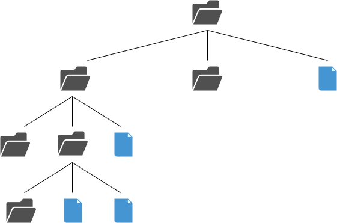

Lab No. 2¶
After completing this lab, students will be able to:
- Inspect and navigate the linux filesystem
- Create, remove and alter files and directories
Go over the man page of ls. Explain why the syntax days FILE instead of directory
Explain what a stack is Explain what recursion is
The File System¶
In Unix, files are organized in a hierarchical structure that resembles a tree, typically represented upside down (in the same fashion as a family tree):
You can see that in this structure, all the elements are “connected” by a path.
A directory is a “branch” within the file system tree. As such it can contain other branches (subdirectories) or leaves (files).
The top directory in a Linux file system is known as the root directory, and it is represented by /.
Notice how the root directory contains other directories and files and how some of these directories contain either directories or files.
Note
If you have not logged into blue.cs.sonoma.edu you need do so in order to start the Lab exercises.
Creating directories and files¶
The mkdir utility creates new directories. It requires as arguments the pathnames of the directories to be created. The following example shows the commands required to generate the directory structure shown below:

[jmora@blue log]$ cd [jmora@blue ~]$ ls lab02 public_html [jmora@blue ~]$ mkdir vehicles [jmora@blue ~]$ ls lab02 public_html vehicles [jmora@blue ~]$ mkdir -p vehicles/cars/sedan [jmora@blue ~]$ ls vehicles/cars sedan [jmora@blue ~]$ mkdir -p vehicles/cars/pickup vehicles/cars/suv [jmora@blue ~]$ ls vehicles/cars pickup sedan suv
mkdir: make directories
- What is the purpose of the
-poption? Suppose you just created the directory structure from the previous image, and that your working directory is your home directory. Will the command mkdir vehicles/planes/jet succeed? - Provide a series of
mkdircommands to complete the following structure (remember thatvehiclesis a subdirectory of your home directory):
vehicles
├── bicycles
│ └── mountain
├── cars
│ ├── pickup
│ ├── sedan
│ │ └── compact
│ └── suv
└── jet
├── cargo
└── fighter
To remove directories you can use the rmdir command.
Just as mkdir, it requires the pathnames of the directories to be removed.
However, rmdir has the limitation that it only works with empty directories.
To remove directories that are not emptu, you can use the rm -r command.
rmdir and rm -r: remove directories
- Provide a list of commands to remove the
vehicles/cars/sedandirectory.
Moving and copying files¶
The mv command can be used for two purposes: rename a file/directory, or move the file/directory to another path.
mv: move or rename files
- Make your home the working directory. Run the following command: tar -xf /tmp/vehicles.tar. This will create three files with names of vehicles in your working directory.
- Provide a list of commands that will result in moving the files to the corresponding directory within the
vehiclesdirectory. - The three files should contain the Wikipedia link that corresponds to the name of the file. However, the file named
priusis incorrect. Provide a single command that will make the file name reflect the content of the file (e.g. the filename should befseries) and will place the file under the correct directory (~/vehicles/cars/pickup)
The cp command is used to copy files or directories. In the following example, a file is created by redirecting the output of the echo command into a file called original.
The cat command reads that file and prints that on the screen, this is done as a verification step.
original is then copied into a file called clone. Notice how the contents of clone are the same as the contents of original.
[jmora@blue ~]$ echo "This text is the content" > original [jmora@blue ~]$ ls lab02 original public_html [jmora@blue ~]$ cat original This text is the content [jmora@blue ~]$ cp original clone [jmora@blue ~]$ ls clone lab02 original public_html [jmora@blue ~]$ cat clone This text is the content
In order to copy directories, you need to provide the -r option to the cp command. This option stands for recursive, and basically it means that it will traverse the whole tree under the directory that you want to copy.
cp: copy files or directories
- What command would you use to copy the file /tmp/airbus into the appropriate subdirectory within
vehicles? - We want to make a backup of the
vehiclesdirectory into a directory calledvehicles_backup. What command will serve this purpose? - Using a text editor, create two files in your home directory named
file_1andfile_2. Make sure that the content of these files is not the same. Execute the command cp -n file_1 file_2 and after this inspect the contents of the two files. Execute the command again but this time use the-ioption. Based on your observations (you can always look at the man pages, of course), what is the purpose of these two flags?